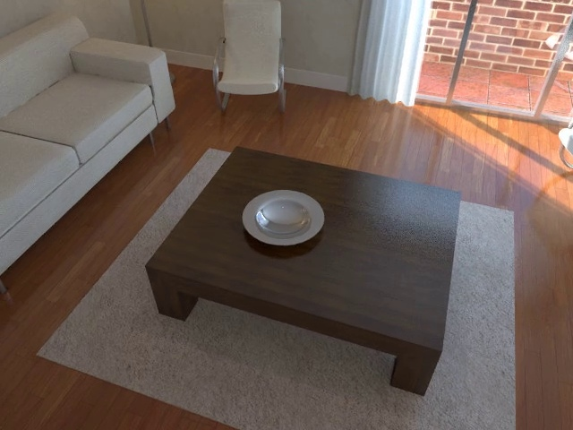
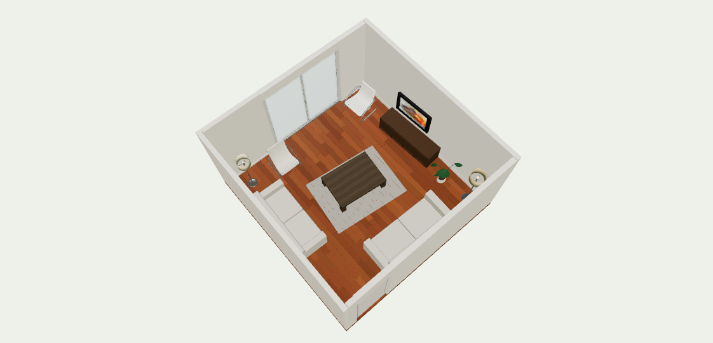
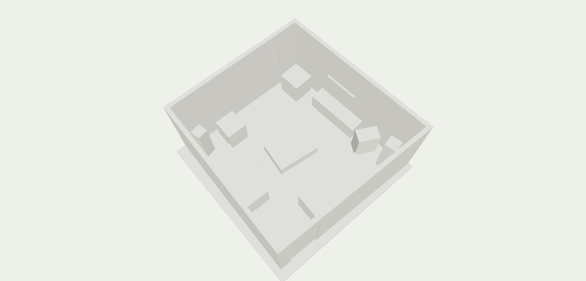

从一段视频，
到可编辑的
三维场景。
Video2Scene 将单目 RGB 视频转成结构化场景，通过对话、人工核对与逐对象精修，交付可继续编辑的 Blender / GLB 资产。
从视觉证据到可编辑资产
多模态工具调用、对象精修、人工核对与版本化交付。
本案例只以 RGB 为重建输入；真值几何与相机未提供给重建流程。用户核对并采用白模布局。
连接模型、工具与交互，
构建可检查的生成流程。
把流程分成可检查的阶段，让每个阶段都有明确输入、产物与失败出口。
模型根据图像与工具反馈推进语义决策；宿主维护执行约束、任务状态与版本一致性。
架构定位 / 为什么主控更接近 ReAct？与 Plan-and-Execute 有何区别？
| 层次 | 项目中的实际机制 | 对应概念 |
|---|---|---|
| 主控 Pi | 查看图像和状态 → 选择工具 → 读取返回结果 → 决定下一步 | ReAct 式多模态工具循环 |
| 场景规划 | 对象先验、布局和目标清单，经过用户确认 | 结构化规划 + 人在回路 |
| 对象精修 | Author 建模 → 实际构建与渲染 → Critic 检查 → 有界返修 | 生成—评估—修正循环 |
| 后台调度 | 根据依赖、资源额度与积压补位，保存任务状态和恢复凭据 | 持久化任务调度 |
| 保存交付 | 检查候选、版本和空间约束，通过后提交 | 确定性工作流与验证 |
为什么称为 ReAct 式
Pi 创建真实 Agent session，注册结构化工具。模型看到工具返回的文字与图像后继续选择下一步，也可以补看帧、修正先验和再次测量。这是一种由新观察驱动动作的循环。
“ReAct 式”描述运行机制，不表示严格输出论文中的 Thought / Action / Observation 文本格式，也不要求展示模型内部推理。
为什么不直接叫标准 Plan-and-Execute
系统有“先确认布局、再执行对象任务”的规划阶段，但当前主路线未采用独立通用 Planner 持续输出完整步骤计划，再由独立 Executor 和 Replanner 执行更新。
依赖调度与恢复主要由宿主代码管理。Author–Critic 是独立评估与有界修正；仅有 critic 不足以称为完整 Reflexion 架构。
让模型读取同一份证据
保留原始帧身份；ViPE 提供相机与深度，SAM 提供对象掩码，多模态模型提供类别、外观与工具调用决策。几何计算将这些信息变为空间提议。
TOOLS ViPE / SAM / VLM
OUTPUT camera, depth, mask, geometry proposal
CHECK source_frame_index + content hash
先确认布局，再投入精修成本
用白模表达对象位置、方向、尺寸与支撑关系。用户在浏览器调整并采用布局；后续精修继承该版本的空间约束，保留用户意图。
UI select / translate / resize / save
OUTPUT accepted layout + target IDs
CHECK explicit user event + revision
生成之后，看真正导出的资产
对象作者编写 Blender 代码；宿主实际构建和渲染；独立 critic 对照原图、掩码与导出后图像复核。明显结构错误进入有预算限制的返修。
AUTHOR Blender code → asset.blend / GLB
CRITIC accept / revise / unclear
CHECK exported asset + fixed camera views
把“生成完成”转成“可靠交付”
在最新场景中合并候选，检查支撑、碰撞、边界与证据，再串行提交场景版本。任务状态、资产包与失败记录持久化，支持查询和恢复。
HOST validate → atomic commit → export
OUTPUT versioned .blend / .glb
CHECK candidate hash + saved revision
项目实现
模型与工具适配、帧与证据管理、几何提议、作者与复核流程、场景版本与任务恢复、Web 工作台、验证与发布检查。
使用的基础能力
ViPE 的几何估计、SAM 的预训练分割、通用多模态模型、Blender 与 Three.js。项目工作集中在系统设计、集成、纠错和交付链路。
· 点击四个阶段可展开技术细节。
技术细节 · 展开查看实现
实现细节 01 / 一次对象精修的输入、产物和责任边界
| 阶段 | 具体数据 | 为什么需要 |
|---|---|---|
| 场景快照 | scene_id、revision、instance_id、transform、local_bounds_m、support_id | 把目标绑定到某个场景版本和对象；描述已有空间约束 |
| 观察证据 | 原始 RGB、可选 mask、K、c2w、source_frame_index、内容哈希 | 将语义判断与几何计算关联到同一帧、同一对象 |
| 作者工作区 | contract.json、参考图、object.py、asset.blend | 限定本次任务范围，保留实际建模代码和可编辑资产 |
| 验证与复核 | 导出 GLB、固定相机对比图、critic.json、run.json | 复核交付后的外观，记录每轮调用、问题和终态 |
| 场景提交 | 候选身份与哈希、基础 revision、request_id、验证结果 | 识别过期候选和重复请求，形成可查询的保存记录 |
对象追踪示例：以茶几为例，实例身份贯穿掩码、几何提议、用户采用布局、作者契约与最终资产。某一步失败时，可以沿对象 ID 和运行记录定位，不必重新检查整个房间。
实现细节 02 / 坐标、图像变换与单目尺度
集中处理坐标转换
场景使用 Y 向上，相机采用 OpenCV 约定；Blender 使用 Z 向上。对象局部坐标从场景转 Blender 时为 (x, −z, y)，相机转换另含相机轴方向变换。
矩阵检查覆盖有限值、刚体旋转、右手系、正尺度及归一化四元数，避免反射、错轴或重复应用世界位姿。
图像与内参同步变换
像素映射为 A 时，同步更新 K′ = A K。RGB 与掩码使用相同像素映射；掩码采用最近邻插值，保留离散标签。
坐标单位写作米，但单目尺度依然是估计值。用户采用的尺寸与可见表面测量要保留各自依据。
模型决策、对象精修与
持久化工作流，各司其职。
Pi 经宿主调用视觉工具；用户确认布局后，调度器派发对象任务，Author–Critic 迭代产出资产，宿主验证并提交版本。
主控与工具
工具接收结构化参数，执行真实 worker；摘要和预览图回到 Pi，形成下一轮观察。
对象级执行
调度器管理依赖与资源；作者、构建和 critic 构成有界循环，无法接受的结果保留失败记录。
状态与提交
任务进度、回执和场景版本各自持久化；同场景合并与提交串行完成，已保存结果可查询。
图中合并了工具摘要回传路径；实际数据产物保存在本地目录，工具结果传递摘要、预览与产物引用。Critic 接受后仍需宿主重新验证。
把“这是茶几”
落到具体像素与三维位置。
Redwood 合成序列中的实际对象证据：同一原始帧，串联 RGB、掩码和深度。

锁定实例，而非只选类别。
文本 + 正点 / 负点 + 提示框，选定一个 SAM track；歧义保留为待补充提示。
掩码内反投影，再跨视角筛选。
边界腐蚀、有效深度、离群点过滤；围绕锚点筛选视角，估计朝向与可见范围。
接受 3 个视角，拒绝 2 个视角。
茶几记录保留 7,219 个点；每个视角的采纳与拒绝均可回溯。
source 1419↔observation 47↔ViPE dense 503· 使用原始帧号关联，采样序号各自独立。此页为 Redwood Augmented ICL-NUIM 合成序列，与首页自建合成客厅为两个不同案例。7,219 是该对象记录的点数。
实现细节 03 / 从掩码到三维提议：实际筛选规则
| 步骤 | 当前实现 | 目的与局限 |
|---|---|---|
| 有效观测 | 掩码面积至少 100 像素；3×3 腐蚀；深度清洗上限 12 m；反投影步长 4 | 减少边界混入与计算量；小物体、细部可能受损 |
| 帧内过滤 | 点数至少 25；以中位数为中心，保留距离不超过第 92 百分位的点 | 去掉远离主体的点；属于启发式规则 |
| 跨视角筛选 | 优先种子帧为锚点，否则用最大掩码观测；中心距离阈值为 max(0.45 m, 0.55×先验最大尺寸) | 抑制明显漂移；大物体、局部遮挡与先验偏差会影响筛选 |
| 方向与范围 | 对水平 XZ 点集做协方差特征分解；主轴估计 yaw；局部坐标 3%–97% 分位数计算范围 | 对离群点更稳健；对近对称物体，主轴方向可能不稳定 |
关键输出：保存 center、visible_dimensions、yaw、锚点帧、接受 / 拒绝帧和逐视角观测，再交给布局阶段结合视觉先验判断。
实现细节 04 / SAM 目标身份为什么不能只按最高分选择？
文本“椅子”可能命中多个实例。choose_anchor 先统计每个候选的正点命中、负点命中、提示框匹配和面积；有正点时，先要求命中正点且不命中负点，再比较正点支持。
仍有多个候选时，用提示框与候选包围框的 IoU 消歧；缺少框或匹配相同就返回 ambiguous。纯文本只有唯一非空候选时才直接采用。候选分数会记录，但不会代替实例证据任意选一个对象。
产品意义：错误实例一旦进入后续几何与建模，纠正成本会放大。尽早暴露歧义，给出补点 / 补框的明确出口，更容易定位问题。
工具封装 01 / ViPE 和 SAM 如何进入 Pi 的工具循环？
- 定义工具契约：Python 的 EXTRA_TOOLS 提供 name、description 和 parameters。面向主控的名字是
estimate_geometry和segment_instances，必填参数都是 reason，可选 retry_reason。 - 注册 SDK 工具：bridge.mjs 将定义映射为 customTools，用 Type.Unsafe 承接 JSON Schema，并注册到 createAgentSession；主控使用这组显式工具，关闭内置工具入口。
- 模型发起调用：execute 收到 toolCallId、args 和取消信号，通过 callHost 发到本机
/workflow/internal/tool，携带 project_id、run_id、turn_id 和 tool_call_id。 - 宿主校验并执行：检查工具白名单与 JSON Schema，核对取消状态、重复调用和请求哈希；记录 running 任务后，路由到具体 Python 适配器和模型 worker。
- 回传真实观察：宿主把摘要序列化为 text，把预览图作为 image 内容块返回，同时附带 details.job_id。Pi 接收结果继续决策；密集深度和完整掩码保留在本地产物中。
执行语义：ViPE / SAM 工具调用会等待 worker 结果再返回，同时宿主保留进度与任务记录；它们与后续跨工具调用存活的对象滚动任务，是不同层面的机制。
工具封装 02 / ViPE 的输入准备、执行和返回值
模型决定何时调用，宿主准备输入
主控给出调用理由；视频来源与工作目录来自当前项目。宿主从原始视频生成目标 10 FPS 的密集时序输入，并纳入所有观察源帧，保存密集 manifest 与观察 manifest 的对应关系。
绑定输入、采样配置、运行脚本与环境信息后，创建带 receipt 的作业，通过当前平台适配路径运行 ViPE。开发环境使用 Windows + WSL GPU worker；服务传入 1,800 秒超时及取消信号。
完成后返回可检查的结果
检查 ViPE 输出索引完整覆盖密集输入。返回帧数、观察帧数、采样与几何摘要、预览图、产物目录，以及 manifest 路径和哈希。
将完成结果写入 receipt，并更新 tools/vipe/latest.json。同输入缓存需要通过绑定和文件校验，旧稀疏结果不能被当作密集几何结果复用。
主控下一步：结合返回预览和后续 measure 结果判断地面、支撑及物体位置；几何仍明显漂移时请求更多证据，而不是直接用先验覆盖问题。
工具封装 03 / SAM 的提示来源、输出状态和失败处理
提示从已记录的对象先验读取
segment_instances 的调用参数不直接携带任意掩码或模型路径。宿主读取 prior.json，为每个对象组装 object_id、category、sam_prompt、seed_source_frame_index、正负归一化点和提示框。
验证帧清单、图像尺寸、哈希和种子存在性；将请求、worker、checkpoint 与环境纳入绑定。worker 使用已配置权重，运行时禁止联网下载，作业超时为 1,200 秒。
进程完成与目标解决分开表示
返回每个对象的 status、selected_sam_id、frames_with_target、reason / error，以及 all_targets_resolved；服务最多附上 12 张掩码预览供模型查看。
顶层 complete 说明该工具执行结束，不代表所有实例已成功消歧。需要继续检查对象级状态，补充先验或提示后再决定后续调用。
重试与复用：同 tool_call_id 的已完成结果只有在请求哈希、结果哈希一致时才复用。原生 worker 尚未退出、运行结果不明或失败未说明原因时，不盲目重复启动；失败后重试要求具体 retry_reason，并受尝试次数约束。
把错误定位到具体环节，
再设计修复与回归。
三个可展开的技术话题：数据对应、视频传播、几何解释。
图像看起来合理，
三维提议却漂移。
风险来自观察帧与密集几何序列的采样方式不同。直接用同一个数组下标，会把掩码投到其他时刻的深度上。
source 36 → observation 1 → dense 3
上面的编号来自回归测试夹具。
检查原始帧号、时间、图像尺寸与哈希；不能用相邻帧深度静默替代缺失的精确对应。
建立独立 manifest，验证 source → observation → dense 映射；统一像素变换与相机内参，集中处理 OpenCV / 场景 / Blender 坐标。
针对缺失帧、重复序号、时间偏移、尺寸错误与哈希变化，确保在深度解码前就拒绝；加入实际 CPU 视频采样关联测试。
经验：先验证数据对应，再讨论模型精度。
视频分割返回“完成”，
实际只有一帧有目标。
固定版本的 SAM 3.1 multiplex 适配涉及两处边界：未缓存帧的修正掩码合并，以及末帧种子触发的传播方向。
last seed → backward
middle → both
沿输出合并与 action history 检查：未缓存帧可能丢掉新推理的修正掩码；末帧先向前传播后，反向阶段可能访问不存在的缓存。
仅为已识别 API 添加进程内兼容适配，保留真实 tracker 输出；按种子位置选择传播方向，并记录原源码与方法哈希。
加入端点 / 中间种子回归，以及“多帧输入却仅有种子观测”的质量门槛；该情况直接报错，避免继续处理后续对象。
经验：模型 API 成功，还要检查输出覆盖。
点云覆盖桌面，
却没有完整桌腿。
该茶几可见范围的竖直尺寸约 0.133 m；采用布局中的高度为 0.36 m，结合了其他视角的桌腿观察与支撑判断。
adopted layout = 0.360 m
basis = mixed
单目深度与遮挡导致可见点集不覆盖完整几何。直接把点云包围盒当完整尺寸，会得到过薄的家具。
保留 measured proposal 与视觉先验，显式记录 mixed 依据和隐藏部分推断；用户核对布局后再锁定范围，进入精修。
保留采用前后的尺寸与原因；检查支撑和碰撞，并从其他源视角复核。单目尺度仍然是估计值。
可见表面的范围，需要与完整物体的尺寸分别记录。
· 第一项展示工程防护与回归；第二项是已定位的固定版本兼容问题；第三项是保存的对象记录。
Agent 提出与修正，
宿主检查并保存。
把自由生成约束在已确认的对象与布局中，复核最终导出的实际产物。


Redwood 合成案例的两个保存阶段，同一俯视设置。此处是渲染对比，不是在线重建或三维编辑器。
重新打开导出的 GLB，在固定观察相机下生成对比图，检查轮廓、部件、连接、方向与材质。
给出对象级任务契约
绑定源图、掩码、对象 ID、已采用的位置与尺寸；限定本次可修改范围。
Author 实际生成资产
编写并执行 Blender 代码，输出可编辑网格与材质；宿主检查构建、尺寸与导出。
Critic 独立查看输出
对照原图与导出渲染，返回 accept / revise / unclear；返修说明具体视角与结构问题。
Host 合并、验证、提交
用最新场景检查支撑、碰撞与边界；验证报告绑定候选，场景提交串行执行。
布局先采用；精修继承位置、方向、范围与支撑，避免生成过程覆盖用户修改。
作者与复核调用受预算和超时约束；对象任务、模型名额、Blender 资源分开控制。
持久任务、请求幂等、进程身份和保存检查点，支持恢复与结果查询。
· 独立复核仍由模型完成，几何检查与用户核对共同补充判断。
实现细节 05 / 一轮 Author–Critic 的接受条件和返修分支
一次迭代具体做什么
- 检查取消、剩余时间与调用预算；完整作者 + critic 需预留两个调用名额。
- 准备对象契约和证据，记录受保护输入的哈希；返修只带入本次运行上一轮代码与实际渲染。
- 作者生成并执行代码；宿主核实执行产物，再独立导出、重开并渲染。
- critic 以只读、零工具调用方式查看图像，给出结构化复核结果。
什么时候允许继续
明确的 BUILD_FAILED 在剩余迭代内可以形成技术返修反馈；被保护的输入发生修改时终止。结果不明的调用不会被当作已确认的构建失败处理。
接受要求 status == accept 且没有 major 问题；返回资产前再次核对用户确认文件的哈希并重新解析证据。用户确认中途改变会触发 STALE_REVISION。
预算耗尽仍未获接受时，以失败终态保存反馈；独立 critic 通过只表示该对象在给定观察下通过复核。
实现细节 06 / 滚动调度、保存积压与共享资源
对象调度：在有效授权、运行状态和冷却条件满足时补位；有依赖的对象要等依赖目标达到 saved。已就绪资产积压达到配置上限（默认 3）时，暂停补入新生成任务。
三个不同层面的并发
- 对象任务：控制多少件对象进入生成流程。
- 共享模型 / Blender 额度：默认分别为 3 / 1，跨项目共享。
- 场景保存：同场景合并、验证、提交串行进行。
为什么不把并发直接设很高
作者工具可以启动 Blender，因此整个作者调用保守占用一个 Blender 名额；独立 critic 只占模型名额。对象任务数不等于同时活跃的模型数。
资源获取同时检查所需名额，并在 finally 中释放。限流、待保存积压与依赖共同决定实际吞吐。
实现细节 07 / 重复保存、过期结果与中断恢复
| 场景 | 处理规则 | 解决的问题 |
|---|---|---|
| 同一请求再次到达 | 以 scene_id + request_id 查询；请求内容哈希相同则返回已有结果，不同则报 IDEMPOTENCY_CONFLICT | 连接重试造成重复写入或 ID 被误复用 |
| 用户已修改布局 | 检查基础 revision 与确认哈希；拒绝过期授权 / 候选 | 旧任务覆盖新编辑 |
| 写入过程崩溃 | 不可变 JSON 先落盘，再由数据库事务写入引用 | 中断可能留下无引用文件，但不会让新状态指向未完成文件 |
| 作者调用结果不明 | 保留目标 claim 与原始产物；核对进程和失败凭据，不能靠超时直接重复派发 | 模型已执行但响应丢失，产生重复工作或冲突 |
恢复边界：容量拒绝的可恢复分支要求证据证明作者尚未执行：匹配对象 / 操作 / 授权，核对失败日志，并确认没有对象代码、资产或 critic 记录。恢复保留失败历史。
已经完成一次完整交付，
并验证关键工程路径。
以下数字来自保存的案例与 v0.1.0 验收记录。
| 证据层次 | 记录结果 | 说明什么 |
|---|---|---|
| 实际视频运行 | RGB → ViPE / SAM → 人工采用布局 → 18 个目标 → 导出重开 | 该合成场景的完整流程已跑通 |
| Windows Python 回归 | 506 通过 / 16 跳过 | 主机工程与协议路径；2026-10-30 验收 |
| Web 工作台检查 | 50 通过；HTTP / 模型使用模拟输入 | 桌面、移动端、任务与恢复交互 |
| 真实编辑 / 导出 | 合成桌杯示例浏览器检查 5 通过 | 真实场景仓库、GLB、Blender、保存与刷新恢复 |
调度层面的实际观察
成功作者调用峰值为 2，保存峰值为 1；18 次保存中有 10 次与其他作者调用重叠。说明生成和保存发生重叠，尚无顺序基线可计算加速倍数。
下一步需要补的评估
跨场景分割与重建指标、真实拍摄长尾样本、端到端耗时与成本对比。现有回归测试不调用真实模型，不能用于推断视觉准确率。
· 历史验收统计，未因制作此页面重新运行模型或整套项目回归。
实现细节 08 / 验证分层：什么失败应该由哪一层发现？
确定性工程检查
- 输入层：原始帧身份、尺寸、时间、哈希与坐标有效性。
- 资产层：真实执行、导出重开、局部范围和产物完整性。
- 场景层：支撑、碰撞、边界、候选绑定与版本一致性。
- 交互层：编辑、保存、刷新恢复、任务状态与导出下载。
视觉与业务质量
critic 负责对照源图检查轮廓、部件、连接和材质，用户核对布局与使用意图。它们补充工程检查，但仍受输入覆盖与模型判断影响。
若要声称泛化效果提升，需要固定数据集、标注标准和同条件基线；测试通过数、单案例对象数、视觉精度与耗时指标分别报告。
可以现场演示的排查路线：源帧 → target mask → accepted / rejected views → geometry proposal → adopted layout → 作者代码 → GLB 对比图 → critic → 保存 revision。
关于架构与实现的常见问题。
点击问题查看技术说明；源码路径保留在证据索引中。
系统架构属于 ReAct 还是 Plan-and-Execute？
主控更接近 ReAct 式多模态工具循环：Pi 根据图像、状态和工具结果决定下一步。整体是分层混合架构，包含结构化场景规划、人在回路、对象级 Author–Critic、持久调度和确定性验证。当前主路线没有独立通用 Planner–Executor–Replanner，因此不直接称为标准 Plan-and-Execute。
如何将 ViPE / SAM 包装为 Agent tool？
先定义结构化 schema，再由 Pi 桥接层注册 customTools；模型调用通过本机 HTTP 到 Python 宿主。宿主校验、去重、准备项目输入，执行 GPU worker，保存 receipt 和产物，再把文字摘要与真实预览图回传给模型。ViPE 的工具名为 estimate_geometry；SAM 为 segment_instances，具体提示从已记录的对象先验读取。
为什么需要 VLM + SAM + ViPE？
VLM 负责语义、观察和任务决策；SAM 提供实例像素范围；ViPE 提供相机与深度。三者分别补充类别与意图、实例边界、三维结构证据。单独使用其中一个，很难同时满足语义、空间关系与可编辑交付。
多个同类物体如何保持实例身份？
SAM 种子通过文本、正负点与提示框共同确定一个 track；同等证据仍有多个候选时保留歧义，要求补充提示，避免按最高分类分数任意选择或合并同类对象。视频结果保留原始帧号和 target ID。
项目是否训练了自己的基础模型？
当前路线集成预训练 ViPE、SAM 和通用多模态模型，主要工作包括推理适配、证据管理、几何处理和 Agent 工作流。尚未提供自主训练基础模型或微调收益的评估。
独立 critic 能保证没有幻觉吗？
它能提供另一轮基于图像的检查，但仍可能与作者产生相同偏差。系统同时使用源图 / 掩码、固定观察相机、导出重开、确定性几何检查和人工布局确认；缺乏证据时允许 unclear，避免把推断当成测量结果。
为什么先生成白模，再逐对象精修？
布局错误影响全场景，早期修正成本更低。先让用户确认位置、尺寸和支撑关系，再细化外形和材质，能隔离对象任务、保留用户修改，也让局部失败可以单独重试和修复。
并发怎样避免相互覆盖？
对象资产可持续调度，生成完一件即可补入下一件；同一场景的合并、验证与保存串行执行，并基于最新场景重新构建。请求 ID、候选哈希和版本检查用于识别重复与过期结果，模型 / Blender 另有资源限额。
怎么判断效果真的变好了？
现有案例可以检查场景布局、对象结构和实际可编辑产物。下一步需在固定样本与同条件下分层比较：分割指标、几何 / 位姿误差、人工纠正次数、成功交付率、耗时与成本。视觉截图、回归通过数与单案例完成量分别回答不同问题。
· 技术说明以当前项目实现为依据。
从一个可编辑的场景开始。
先运行合成桌杯示例，体验选择、修改、保存与导出；再为自己的视频配置完整工作流。
体验编辑与导出
Python 3.11–3.13；建议 3.12。安装项目依赖，复制配置并设置本机 Blender 路径。
python -m pip install -e . python -m video2scene check --mode demo python -m video2scene demo
桌杯示例由程序合成，不需要模型账号或 CUDA；保存与导出需要 Blender。
从 RGB 视频构建场景
另需安装并配置 Node / Pi、模型访问、ViPE、SAM 3.1 与 GPU 环境。
python -m video2scene check --mode workbench python -m video2scene workbench --port 8794
完整开发闭环在 Windows + WSL2 运行过。其他平台与账号环境的验证范围见安装文档。
自有代码采用 Apache-2.0；基础模型、工具与素材保留各自许可。完整模型流程会向所配置的服务发送所选图像与文字，运行记录保存在本地。